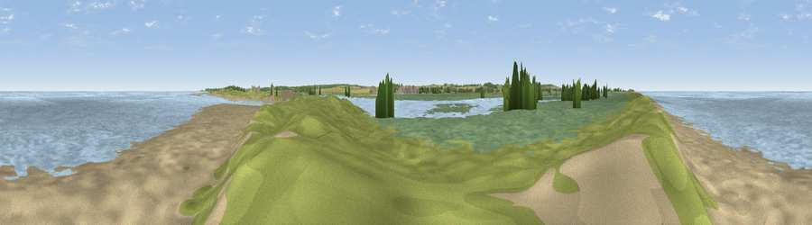

Viewpoint near Burnham Norton
#36850 in England · top 65% of its area beats it · near Burnham NortonThe view, rendered

A 360° render of this exact spot computed from the terrain model, tree cover and land cover — summer colours, afternoon light, calibrated against photographs of famous viewpoints. Real trees, hedges and buildings will differ in detail.
The panorama
Grey silhouette: terrain skyline in each direction (720 bearings, Earth curvature and refraction included). Dashed green: skyline with trees (+15 m) and buildings (+8 m) as obstacles. Blue strip: how far the ground is visible on each bearing.
Where the view opens
Wedge length = distance to the farthest visible ground on that bearing (vegetation-aware). Rings at 10, 25 and 50 km.
What fills the view
71% water · 13% bare ground · 7% grassland · 4% wetland · 4% cropland ·
Angular shares of the visible panorama (visual magnitude), not map area. Landscape diversity 0.44 (0–1 Shannon).
Key numbers
More beautiful places nearby
The staircase of upgrades: each row has a higher view potential than everything closer. Driving times are estimates from straight-line distance, calibrated against real road routing — check an actual route before setting out.
| Place | Direction | Drive | Score |
|---|---|---|---|
| Viewpoint near Burnham Norton | SE · 0 km | ~1 min | 47.0 |
| Gun Hill | ESE · 1 km | ~2 min | 48.9 |
| Viewpoint near Burnham Market | SSW · 5 km | ~11 min | 49.2 |
| Viewpoint near Morston | E · 15 km | ~27 min | 53.5 |
| Viewpoint near Salthouse | E · 22 km | ~36 min | 65.4 |
| Viewpoint near Weybourne | E · 26 km | ~42 min | 68.3 |
| Viewpoint near Claxby | NW · 88 km | ~112 min | 71.5 |
| Broombriggs Hill | WSW · 136 km | ~160 min | 74.4 |
52.97987, 0.74667 · source: osm viewpoint · position refined by local search. Computed location — check access rights before visiting.